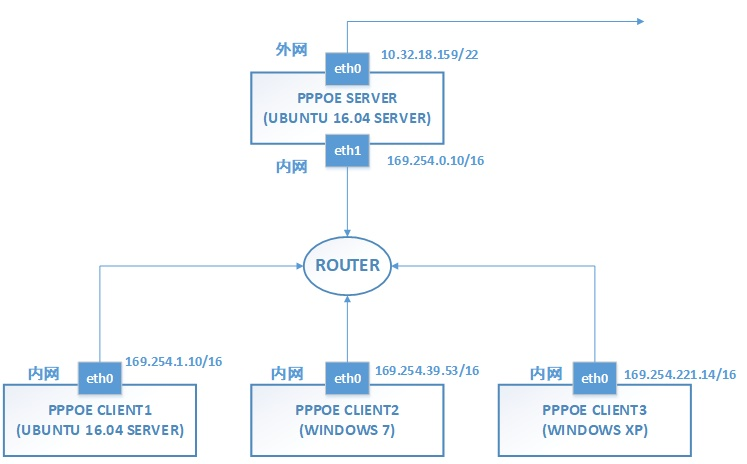

服务器系统为ubuntu16.04 server
网络结构:

Server(ubuntu16.04)： 双网卡，enp0s3内网网卡（无法上外网，IP 169.254.0.10/16），enp0s8外网网卡（IP10.32.18.159/22）
Client1(ubuntu16.04)：单网卡，enp0s3内网网卡（无法上外网，IP169.254.1.10/16）
Client2(WIN7)：单网卡，内网网卡（无法上外网，IP169.254.39.53/16）
1.首先配源
Vi /etc/apt/source.list
#deb cdrom:[Ubuntu 16.04 LTS _Xenial Xerus_ - Release amd64 (20160420.1)]/ xenial main restricted
deb-src http://archive.ubuntu.com/ubuntu xenial main restricted #Added by software-properties
deb http://mirrors.aliyun.com/ubuntu/ xenial main restricted
deb-src http://mirrors.aliyun.com/ubuntu/ xenial main restricted multiverse universe #Added by software-properties
deb http://mirrors.aliyun.com/ubuntu/ xenial-updates main restricted
deb-src http://mirrors.aliyun.com/ubuntu/ xenial-updates main restricted multiverse universe #Added by software-properties
deb http://mirrors.aliyun.com/ubuntu/ xenial universe
deb http://mirrors.aliyun.com/ubuntu/ xenial-updates universe
deb http://mirrors.aliyun.com/ubuntu/ xenial multiverse
deb http://mirrors.aliyun.com/ubuntu/ xenial-updates multiverse
deb http://mirrors.aliyun.com/ubuntu/ xenial-backports main restricted universe multiverse
deb-src http://mirrors.aliyun.com/ubuntu/ xenial-backports main restricted universe multiverse #Added by software-properties
deb http://archive.canonical.com/ubuntu xenial partner
deb-src http://archive.canonical.com/ubuntu xenial partner
deb http://mirrors.aliyun.com/ubuntu/ xenial-security main restricted
deb-src http://mirrors.aliyun.com/ubuntu/ xenial-security main restricted multiverse universe #Added by software-properties
deb http://mirrors.aliyun.com/ubuntu/ xenial-security universe
deb http://mirrors.aliyun.com/ubuntu/ xenial-security multiverse
Apt-get update
Apt-get upgrade
2.下载安装rp-pppoe
Wget https://www.roaringpenguin.com/files/download/rp-pppoe-3.12.tar.gz
Tar xzvf rp-pppoe-3.12.tar.gz
Chown -R root:root /rp-pppoe-3.12/
Apt-get Install libc6-dev
Apt-get Install gcc
Apt-get install make
Apt-get install ppp
./rp-pppoe-3.12/go
输入相关信息
3.配置ppp
先卸载重装一遍ppp(如果已经预装)用以还原设置
Apt-get purge ppp
Apt-get install ppp
修改ppp配置文件
Vi /etc/ppp/options
Ms-dns 10.32.64.33
Ms-dns 10.32.64.34
Asyncmap 0
Auth
Crtscts
Lock
Hide-password
Modem
-pap
+chap
Lcp-echo-interval 30
Lcp-echo-failure 4
Noipx
其中-pap和+chap配置代表选择chap验证，pap验证方式无法在XP以上系统使用。
Vi /etc/ppp/pppoe-server-options
Auth
Require-chap
添加登录用户信息
Vi /etc/ppp/chap-secrets
# client server secret IP address
“test” * “test” *
(有其他用户需要登录直接写在这个文件下)
4.启动PPPOE服务
Pppoe-server -I enp0s3 -L 172.168.0.1 -R 172.168.0.100 -N 10
-I 后加 监听PPPOE服务的网卡 -L后加 PPPOE虚拟服务器IP（随意设置） -R后加 PPPOE网络IP起始（随意设置） -N后加可同时连接数
可通过ps -aux|grep ppp查看启动是否成功 设置ipv4转发
Vi /etc/sysctl.conf
Net.ipv4.ip_forward = 1
Sysctl -p 然后设置iptables伪装
Iptables -t nat -A POSTROUTING -s 172.168.0.0/24 -o enp0s8 -j MASQUERADE
把172.168段的伪装到enp0s8外网网卡上。既可拨上外网。